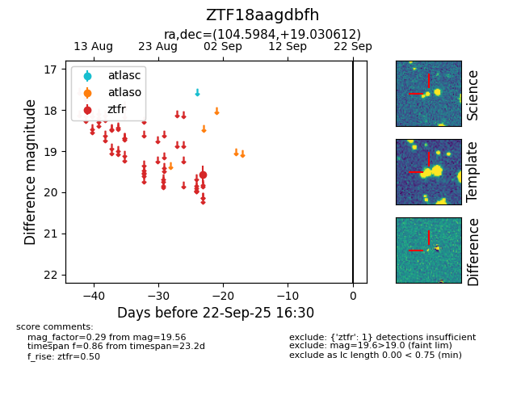

FINK: ZTF18aagdbfh
Lasair: ZTF18aagdbfh
ALeRCE: ZTF18aagdbfh
ZTF18aagdbfh (ztf,fink)
equatorial (ra, dec) = (104.5984,+19.03061)
galactic (l, b) = (196.5867,+10.03296)

last ztfr=19.56
1 ztfr detections